Knox Manage 23.06 release notes
Last updated March 28th, 2024
New
Play Integrity API support for Android Enterprise and AMAPI devices
With Knox Manage 23.06, the SafetyNet Attestation API is replaced by the new Play Integrity API. Upon initial device activation, Android Enterprise and Android Management API (AMAPI) devices are verified by the Play Integrity API by default, even when the policy is not set.
You can define when to run periodic verifications on Android Enterprise devices. If a verification fails, you can choose to receive alerts, or automatically lock or unenroll and factory reset the device.
For AMAPI devices, verification is performed only once during the initial activation. You can specify automatic unenrollment and factory reset of devices that fail verification.
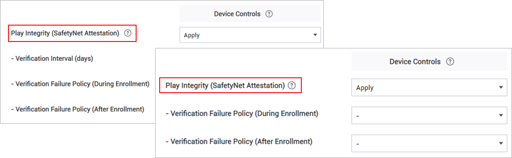
The SafetyNet Attestation API is being deprecated in June 2024. The Play Integrity API offers improved detection of device-side accounts as well as Google Play app and user accounts. There is no change in policy options between the two APIs.
The Knox Manage team strongly recommends that you upgrade to the latest Knox Manage agent, which supports both the APIs for now, and migrate to the new Play Integrity API.
For information about how to migrate, see Migrate from SafetyNet Attestation API in the Android Developer documentation.
Bulk uninstallation of Chrome PWA apps in Android
With Knox Manage 23.06, you can use the Uninstall App device command to uninstall, in bulk, the Chrome progressive web apps (PWA) from enrolled Android devices.
Support for app component blocklists
You can now specify app component-level blocklists for Samsung Knox devices. The blocklists can be set at the device level or for a work profile.
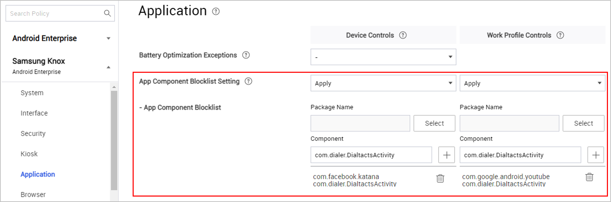
For more information, see Samsung Knox running Android Enterprise policies..
Managed configuration for internal Android apps
With Knox Manage 23.06, you can create managed configurations for internal Android apps. Previously, you could create managed configurations for other app types. A managed configuration specifies the app settings that IT admins can control.
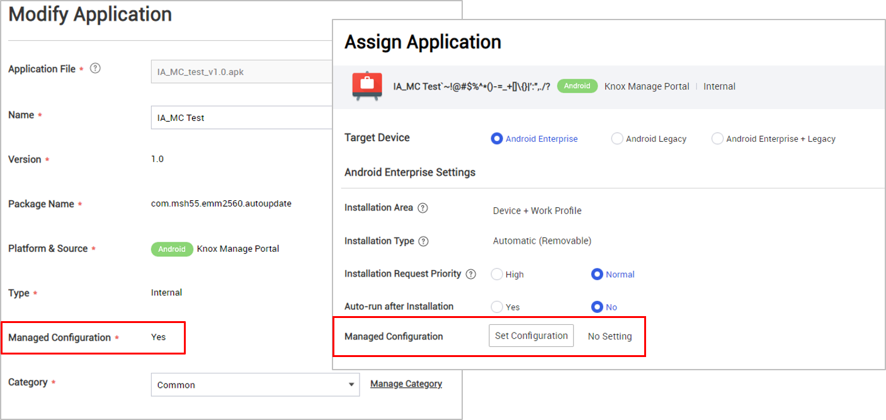
You can also check for and review any feedback received on your internal apps. To do so, go to Device Details > Application > Installed Application > View Feedback.
For more information, see Add internal Android, iOS, and macOS apps and Assign internal Android, iOS, macOS, and Windows apps.
Support for device commands in Direct Boot mode
Previously, device users needed to manually update any queued device commands after device was rebooted.
For Android Enterprise devices released since 2021 and running Android 11 and higher, Knox Manage 23.06 supports two device commands — Update License and Convert License — in Direct Boot mode. The commands are automatically applied to the device after reboot, but before it’s unlocked.
Windows OS policy additions
Knox Manage 23.06 enhances support for Windows OS devices with new policies:
-
You can define proxy configurations with three different connection types — Proxy Server, Setup Script, Auto Detect.
-
You can set up Windows Hello for secure access to Windows devices, with authentication based on biometrics, PIN, or the Trusted Platform Module technology.
-
You can also set other Custom policies that are not available by default through the Windows configuration service provider.
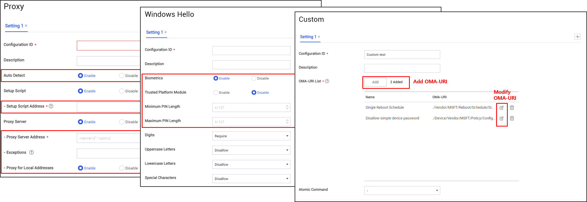
For more information, see Windows policies.
Support for MSI command line options on Windows devices
With Knox Manage 23.06, you can now use Microsoft Standard Installer (MSI) command line options to manually set how to run and configure internal apps after they’re installed.
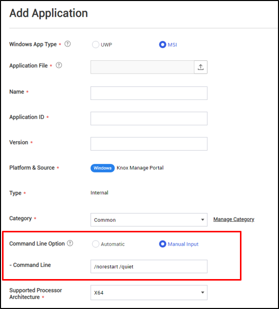
For more information, see Add internal Windows apps.
Shared iPad policy additions
With Knox Manage 23.06, Shared iPads running iOS/iPadOS 16 and higher support two new policies:
- Managed Apple ID Default Domains, to specify up to three default domains for your enterprise’s managed Apple account.
- Online Authentication Grace Period (Days), to specify the number of days after which network authentication is required on the device.
For more information, see Automated Device Enrollment quickstart.
iOS device information additions
With Knox Manage 23.06, you can now view additional details for iOS devices. For dual SIM devices or devices that support eSIMs, the Device Details page displays two IMEI numbers. Additionally, the Network tab on the page displays:
- SIM Carrier details, for iOS/iPadOS 16 and higher versions.
- Current Country & Carrier details, for iOS/iPadOS 12 and higher versions.
- EID number, for iOS/iPadOS 14 and higher versions.
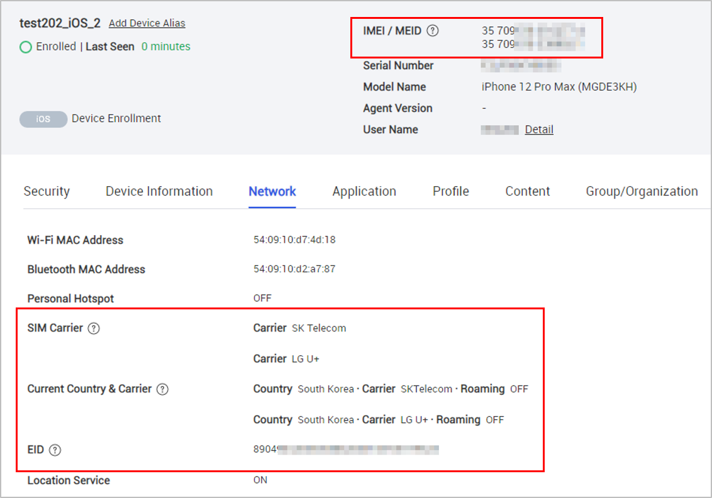
Chrome OS policy additions
Knox Manage 23.06 updates include new policies to set up Wi-Fi, Ethernet, VPN, and General Settings for Chrome OS devices.
You can access the policies on the Profile details page by clicking Modify Network Policy.
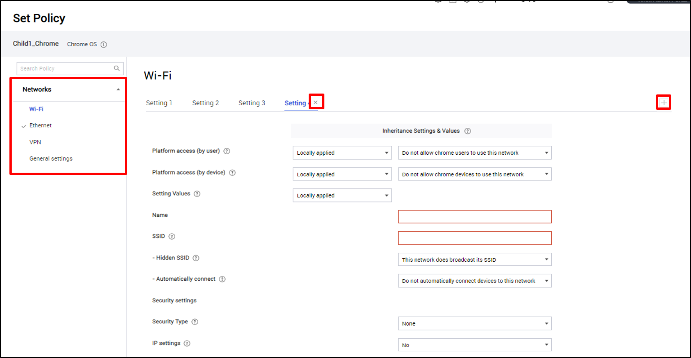
For more information, see Chrome OS policies.
Text widget in Kiosk wizard
You can now use the Text widget to easily identify the user name and user ID of kiosks.
The Text widget, available for multi-app kiosks, supports the use of dynamic lookup items, User Name and User ID, which are automatically replaced by real-time values at runtime. You can use these lookups to display a kiosk’s information on its screen.
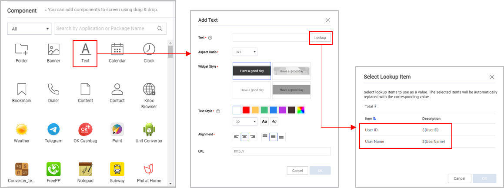
For more information, see Utilities in the Kiosk Wizard.
Knox Remote Support for AMAPI devices
Previously, you could use Knox Remote Support only for Android Enterprise devices.
You can now remotely support AMAPI devices using Knox Remote Support. To start a session, send an SMS to the AMAPI device. The SMS has instructions to install the Knox Remote Support agent and an access code to initiate the session.
Support for license key to use DualDAR and UCM
With Knox Manage 23.06, you can enter Knox Platform for Enterprise Premium or Knox Suite license keys in the Knox Manage console to enable DualDAR encryption and Universal Credential Manager (UCM) for Samsung Knox devices.
To be able to enter the license key, you must first select the Enable Dual DAR controls and Enable UCM policy controls for the profile. For more information, see Samsung Knox running Android Enterprise policies and Enabling Dual DAR with Knox Service Plugin (KSP).
Support for .mbtiles content
With Knox Manage 23.06, you can now upload .mbtiles files, used in geographic maps, from the Add Content page and share them with device users.
For more information, see Content overview.
Collapsible records on Organization page
Knox Manage 23.06 adds a toggle to collapse and expand organization records, such as those listed on the Organization, Assign Application, Assign Profile, and Assign Content pages.
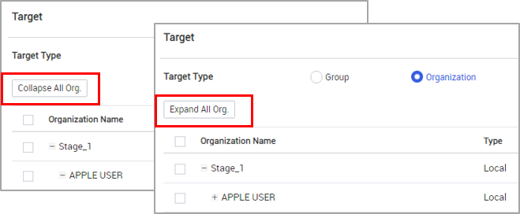
Additions to device group details
Knox Manage 23.06 supports additional columns that you can use to view device information while selecting devices to add to a group.

For more information, see Add devices to device groups.
Additions to device details
Two new options — Agent Version and Lock Status — are available on the Device page. You can add these as columns on the page and use them to sort the device list. These options are included when you export and download the device list.
You can add Lock Status to the search criteria while searching for devices, and use the Agent Version column to sort devices or filter them by version number. You can easily identify the devices that need an update and use the Sync Installed App List device command to update them. For more information, see Viewing device list.
Updates
Ability to remove the work area on Android Enterprise and AMAPI devices
Previously, for Android Enterprise devices using work profile on company-owned device mode, you had to factory reset the device to successfully unenroll it from Knox Manage.
With Knox Manage 23.06, you can now remove only the work profile from a work profile on company-owned Android Enterprise device or an AMAPI device, without the need to factory reset it. Device users can continue using the device as is.
The Remove Work Profile only option removes any installed Knox Manage agents from the work and personal areas of a company-owned device. This action removes all policies from the work and personal areas, such that the device doesn’t retain any management policies whatsoever.
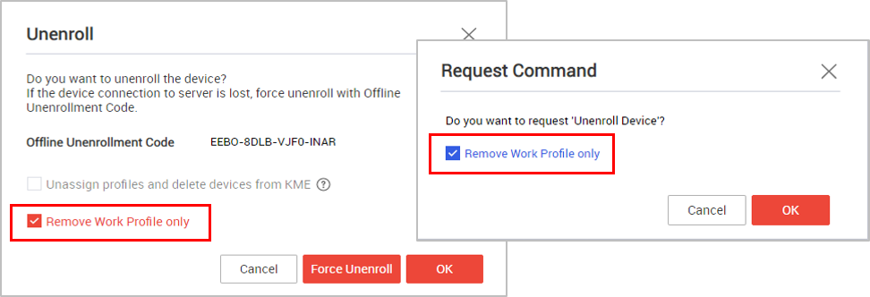
You can predefine a notification message template for this change and push notifications to the device users. For more information, see Unenroll devices and Android Enterprise device commands.
Ability to lock the work profile on Android devices
Previously, you could lock the whole device on expiry of the keepalive interval.
With Knox Manage 23.06, you can now lock the work profile on an Android device when its keepalive interval expires. The device user must manually enter a passcode to unlock it.
To use this feature, the device users need to first go to Device settings > Workspace and disable the Use one lock option on the device.
For more information, see Configure the keepalive settings.
Auto-installation of multiple certificates on Android devices
Previously, it was possible to automatically install a single certificate only on an Android device.
With Knox Manage 23.06, multiple certificates can be automatically installed on the device, if no user certificate passwords are required for installation. Additionally, a device lock password must be set on the device before installing certificates.
For more information about certificates in Knox Manage, see Android Enterprise policies.
Ability to view password compliance details for a work profile
With Knox Manage 23.06, you can now view the password compliance status of an Android device’s work profile under the Security tab on the Device Details page.
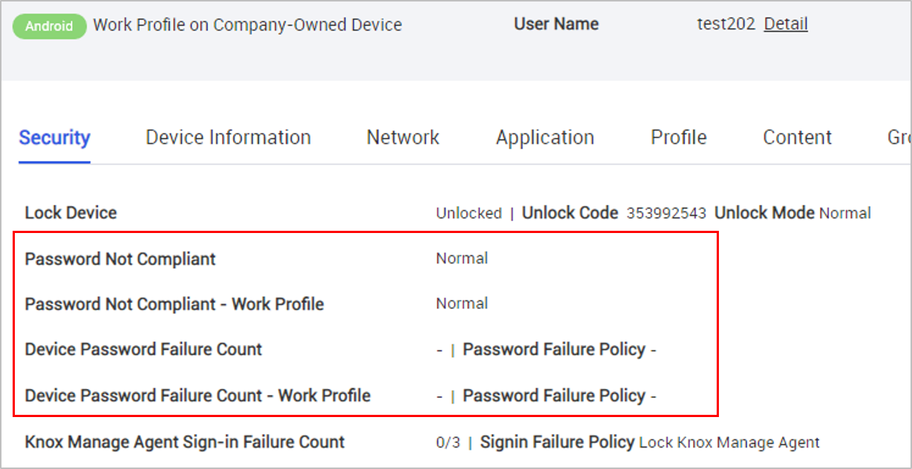
Previously, you could view only the device’s password status on the page. For information about the Device Details page, see View details of a device.
Improvements to user password resetting
When you add users in Knox Manage, you can specify if they must reset their passwords when they first sign in to a device. For Android devices, Reset after Sign-in now applies to:
- The work profile on personally- and company-owned devices
- Secondary users on shared devices
- Provisioned accounts on non-shared devices
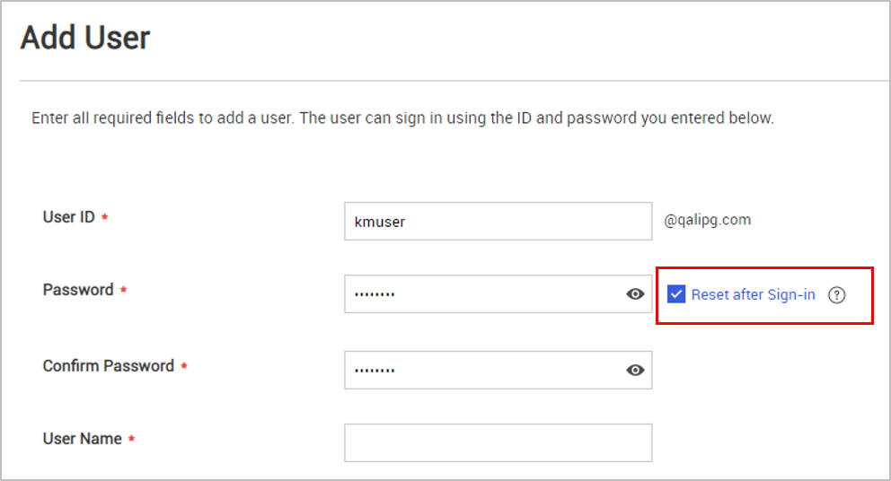
This feature is not available for:
- Staging users on shared and non-shared Android devices
- Users synced from third-party identity provider integrations
- Devices activated by Knox Mobile Enrollment
For more information, see Register a single user account.
Improvements to enrollment process
Previously, device users needed to tap a few enrollment screens after entering their credentials to complete the enrollment.
With Knox Manage 23.06, enrolling Android devices is easier than ever, and completed with fewer taps. Device users need only to sign in to enroll the device. No other manual action is required and the users are taken directly to the home screen afterwards.
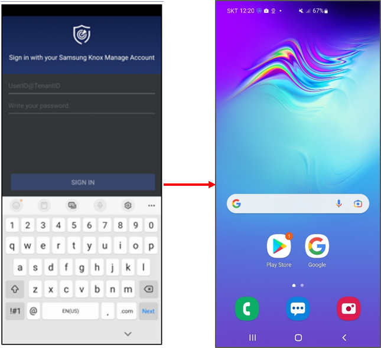
Android Management API additions and improvements
With Knox Manage 23.06, AMAPI devices now support the following:
-
A new system policy — Certificate Setting — to allow or restrict users from setting certificates on their devices.
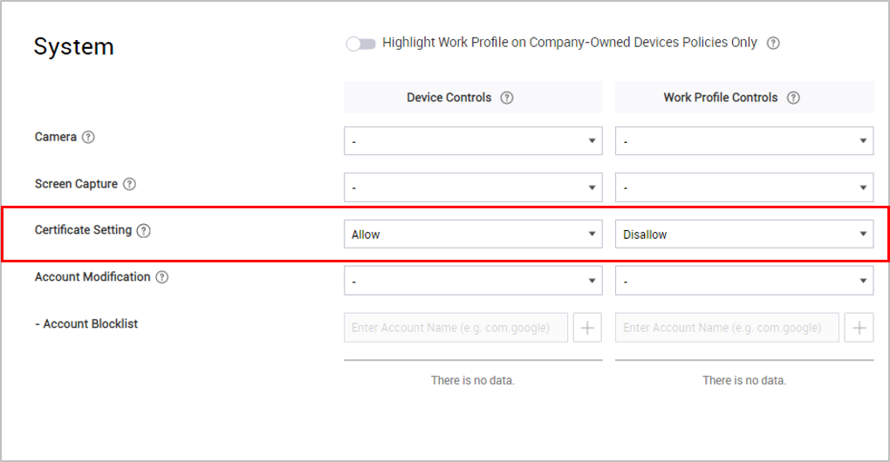
-
An unlimited expiration period for tokens generated for device enrollment. Previously, the maximum period was 90 days.
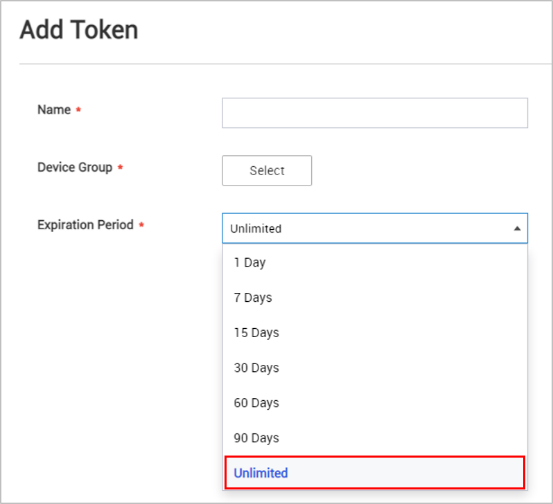
-
Two new device commands:
-
Reboot device for fully managed devices
-
Delete app data for fully managed devices and devices with work profiles
-
For more information, see Android Enterprise policies and Android Enterprise device commands.
Improvements to iOS device commands
Previously, disconnected iOS devices supported a single device command — Unenroll Device.
With Knox Manage 23.06, disconnected iOS devices support the same device commands as connected devices. The commands are executed when the device connects to the Knox Manage server.
For a list of all iOS device commands, see iOS device commands.
Network configuration policy additions and improvements for Apple devices
For devices running iOS 14 or iPadOS 14 and higher, you can now configure Per-App VPN and specify the apps allowed to connect to the internet through the VPN. The configuration applies to all VPN, except L2TP and PPTP.
You can configure Wi-Fi using the new QoS Marking Policy to manage network traffic. You can also specify additional Wi-Fi security types, and enable the Captive Bypass feature for secure access to public W-Fi.
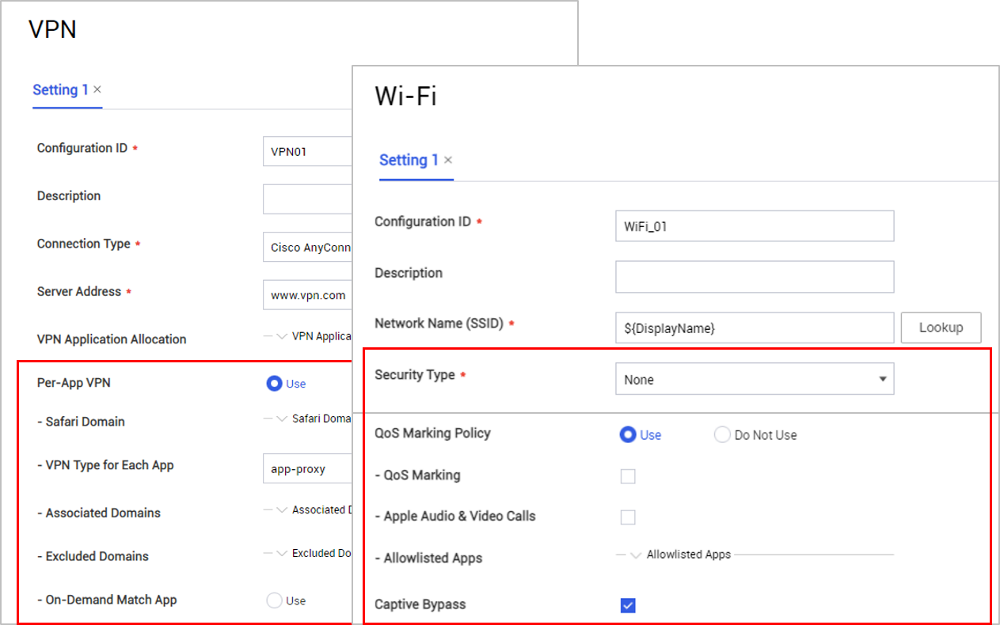
For more information, see iOS policies.
Mobile Admin access improvements
With Knox Manage 23.06, the mobile sign-in screen to access the Knox Manage Mobile Admin Dashboard is updated. Device users now see the Go to Mobile Admin option after they select Sign In with Knox Manage Account on their mobile browser.
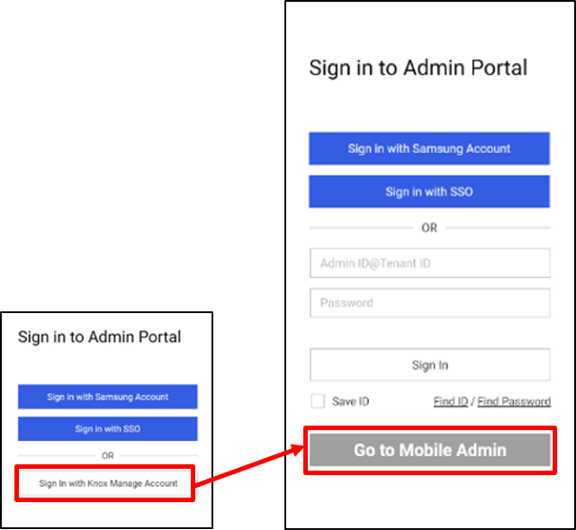
For more information, see Get started on using Mobile Admin.
Improvements to integrations with other Knox products
Knox Manage 23.06 offers the following enhancements for integrations with other Knox products:
- To avoid installation failure, the Knox Asset Intelligence app is now added to the list of approved app installers for the Knox Manage agent.
- Knox Remote Support is now available to Managed Service Provider (MSP) customers from the MSP portal.
Support for CA direct connection
Previously, a certificate authority (CA) could be provided only using Cloud Connector.
With Knox Manage 23.06, you can now also use the Direct Connection option that supports the CA of an authorized public network. For more information, see Certificate authority (CA).
Improvements to email alerts
Knox Manage 23.06 supports additional alert events to trigger email notifications to IT admins. You can search for audit events by name and select any audit event to create an alert for your admins.
In addition, the Alert page now displays the Level column instead of the Alert Type column. For more information, see Configure alerts.
Samsung Knox policy additions and improvements
Know Manage 23.06 supports new values — N/A and Apply — for the Network Time Protocol Settings system policy. Previously, the values available for the policy were — N/A, Allow, and Disallow.
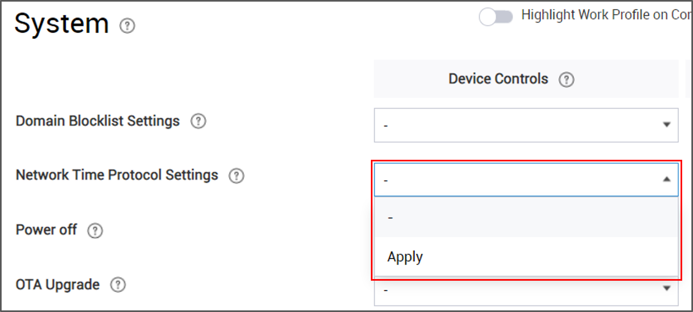
Any existing policies with the value Allow, are now automatically marked as Apply. Existing policies with the value Disallow, are now marked as N/A.
For more information, see Samsung Knox running Android Enterprise policies.
Console terminology updates
The following terms have been updated on the Knox Manage console.
| Page or element | Previous term | New term |
|---|---|---|
| Organization page | Undefined Organization | Default Organization |
|
Group page Applies to new tenants created with Knox Manage 23.06 and higher. |
Tenant ID (Default Group) | Default Group |
| Device Details page | Device ID | Device ID for Knox Manage |
|
License menu Applies if both, Knox Manage license (starting with KLM09) and Knox Manage license (starting with KLM12), exist in the tenant. |
Knox Manage license (starting with KLM09) | Legacy Knox Manage license |
| Android Enterprise page | Replace EMM |
Replace The button is now relocated next to the administrator email address. |
Deprecations
Notice regarding directory integration deprecation
Directory integration support is sunsetting starting with Knox Manage 23.06, and support will cease in 2024.
- The Add and Copy options are removed from the Directory Pool and Directory Service pages.
- Directory Integration is removed from the Advanced menu for customers who do not use the service.
For more information, see Manage connections.
On this page
Is this page helpful?